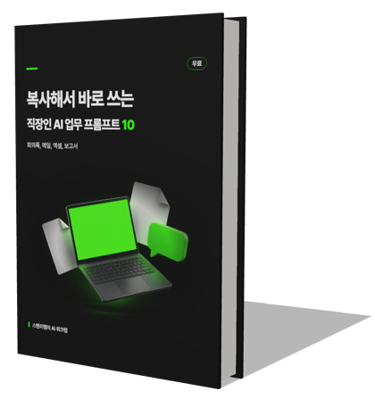

스탠리탬의 AI 워크랩@stanleetamaiworklab
매주 반복하는 업무,
AI에게 넘기는 법
회의록, 보고서, 메일, 엑셀. 직장인이 내일 바로 쓰는 AI 업무 자동화를 알려 드려요.
기업 AI 교육 300시간+인프런 강의 5개Claude, ChatGPT, Gemini
📍 릴스에서 본 자료를 찾으세요? 무료 자료실에 다 있어요 ›

처음 오셨다면 이것부터무료 전자책직장인 AI 업무 프롬프트 10이메일만 남기고 바로 받기 ›
강의
무료 도구
채널